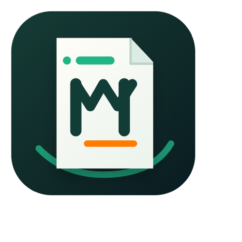

ABOUT

面向微信公众号写作的 Markdown 编辑器。
OpenGZH 是一款纯前端 Markdown 编辑器，专为微信公众号排版而设计。支持实时预览、丰富的主题样式、代码块高亮、图片本地化管理，以及一键复制富文本到公众号后台。
核心特性
技术栈
Vue 3 + markdown-it + highlight.js + turndown + IndexedDB + Canvas API
纯前端静态项目，无构建步骤，开箱即用。
ABOUT

面向微信公众号写作的 Markdown 编辑器。
OpenGZH 是一款纯前端 Markdown 编辑器，专为微信公众号排版而设计。支持实时预览、丰富的主题样式、代码块高亮、图片本地化管理，以及一键复制富文本到公众号后台。
Vue 3 + markdown-it + highlight.js + turndown + IndexedDB + Canvas API
纯前端静态项目，无构建步骤，开箱即用。